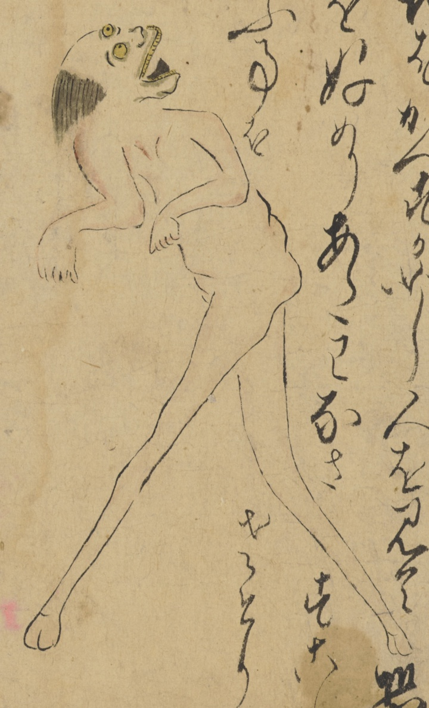

山おじ；ヤマオジ，足長猿，アシナガザル，猿；サル，動物；ドウブツ，獣；ケモノ

山おじ。足長猿。後頭部にだけ毛髪がある。長い足。後ろを振り向いている。手を前に垂らしている。
著作者：長岡多門／出典：親書誌：U426_nichibunken_0448：諸国妖怪図巻／日付：2019／資源識別子：U426_nichibunken_0448_0001_0002
Copyright (c)2010- International Research Center for Japanese Studies, Kyoto, Japan. All rights reserved.